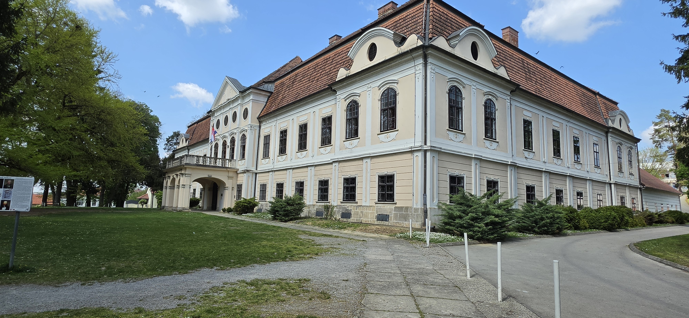
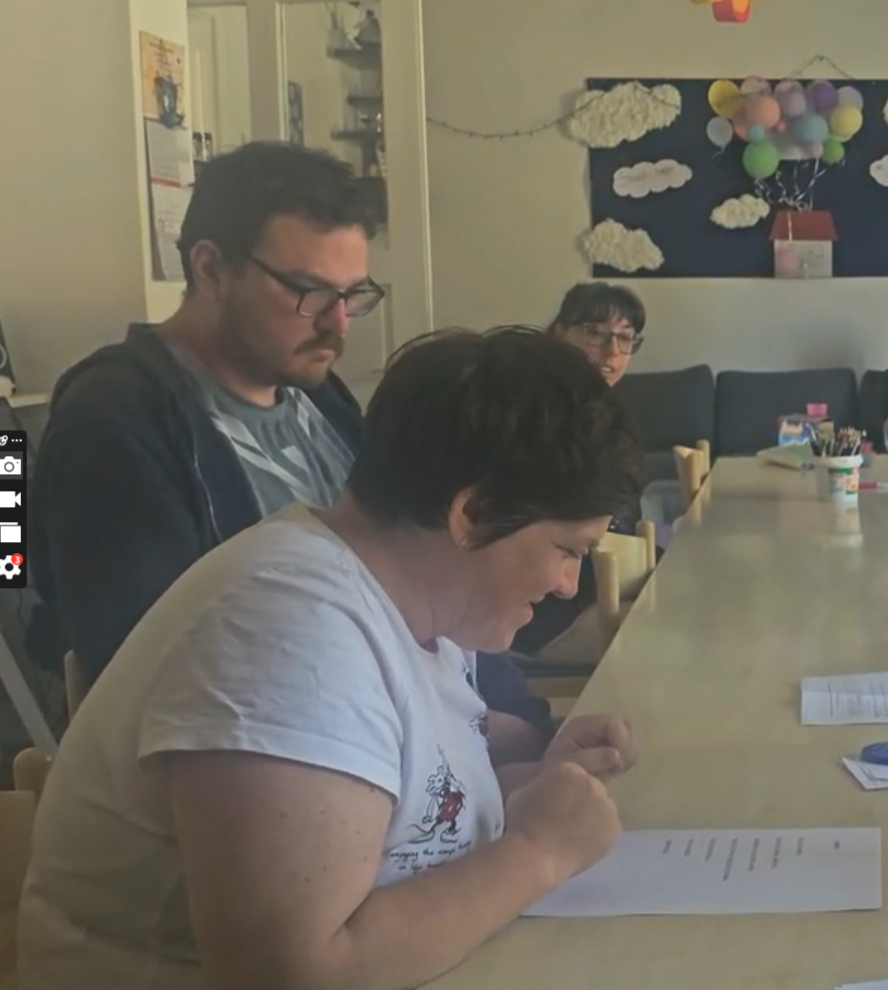
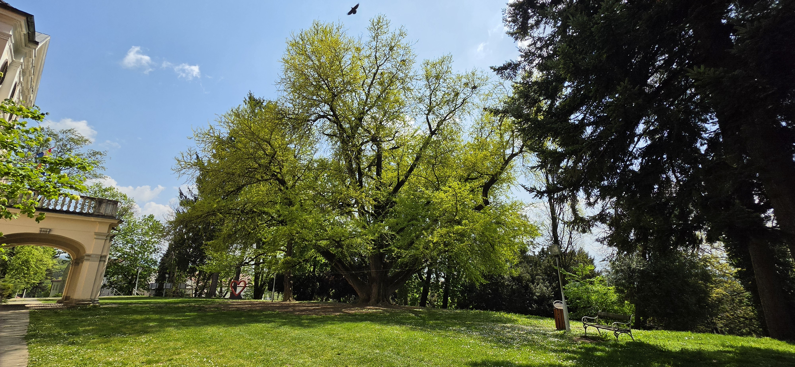
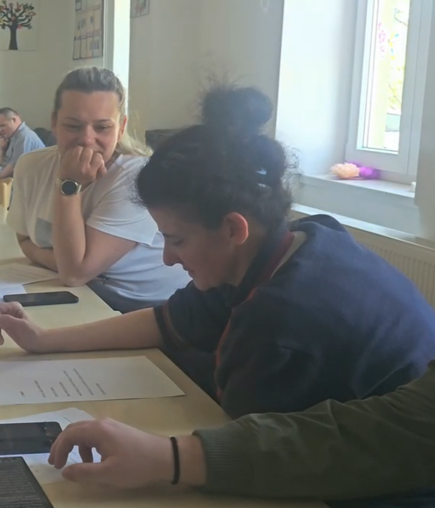

Tko je Korak dalje
Udruga "Korak dalje" Daruvar aktivna je organizacija za osobe s intelektualnim teškoćama. Surađivali smo s korisnicima koji su sposobni čitati uz podršku i koji su željeli sudjelovati u opisivanju onoga što vide.
Kako smo surađivali
Korisnici Korak dalje ne mogu ići u muzej s nama — ali muzej može doći k njima. Donijeli smo fotografije, pojednostavljene tekstove i Samsung Galaxy uređaje u prostor udruge. Testirali smo tri funkcionalnosti mobitela zajedno s korisnicima.
Kustosov tekst → Summarise → Writing Assist
Stručni tekst od kustosa prvo smo proveli kroz Summarise (sažetak), a zatim kroz Writing Assist s opcijom Casual. Rezultat su kratke, jasne rečenice s crticom na kraju — prilagođene za čitanje naglas.
Isprintani tekstovi za korisnike
Printali smo dva gotova teksta — jedan o dvorcu Janković, drugi o ginko stablu. Korisnici su ih čitali naglas vlastitim tempom dok smo snimali.
Circle to Search — prepoznavanje eksponata
Dali smo korisnicima fotografiju muzejske vitrine s više detalja. Olovkom za ekran (S Pen) zaokružili su predmet koji ih zanima — AI je odmah vratio tekstualni opis bez potrebe za tipkanjem.
Sketch to Image — crtanje eksponata
Korisnik koji voli crtati pokušao je nacrtati kako zamišlja predmet iz muzeja — npr. šalicu iz koje je pio grof Janković. AI je pretvorio skicu u realističnu sliku.
Njihov glas u aplikaciji
Snimke čitanja transkribirane su pomoću Live Transcribe. Konačni opisi u aplikaciji su tekst koji su korisnici čitali naglas — kad posjetitelj klikne "Slušaj", čuje te iste riječi.
Testiranje 1 — Writing Assist
Korisnici su dobili dva isprintana teksta koja smo pripremili iz kustosovih izvora pomoću Summarise i Writing Assist (Casual). Čitali su ih naglas, a mi smo snimali.

Tekst 1 — Dvorac Janković
Kustosov stručni opis (izvor)
Dvorac Janković sagrađen je u drugoj polovici 18. stoljeća, nakon što je Antun Janković 1760. godine otkupio vlastelinstvo Daruvar. Obitelj Janković uložila je u obnovu i razvoj tada zapuštenog područja — obnovili su termalne izvore, doveli nove stanovnike i izgradili reprezentativni barokni dvorac.
Konačni easy-to-read tekst (isprintan korisnicima)
Ovo je dvorac. —
Zove se dvorac Janković. —
Sagradio ga je grof Antun. —
Bilo je to prije više od 200 godina. —
Dugo je bio škola. —
Sada je muzej. —
Dobrodošli!
Snimka korisnice — Nina čita naglas


Tekst 2 — Ginko stablo
Kustosov stručni opis (izvor)
Ginkgo biloba stabla u daruvarskomparku posađena su u drugoj polovici 19. stoljeća. Vrsta je preživjela pad asteroida koji je uništio dinosaure. U parku je posađen par — muško i žensko stablo — što je rijetko u europskim parkovima.
Konačni easy-to-read tekst (isprintan korisnicima)
Ovo je jako staro stablo. —
Zove se ginko. —
Ima skoro 250 godina. —
Najstarije je takvo stablo u Hrvatskoj. —
Postojalo je još dok su živjeli dinosauri. —
Zovemo ga Adam.
Snimka korisnice — Dajana čita naglas

Testiranje 2 — Circle to Search
Korisnik dobiva fotografiju muzejske vitrine s više predmeta na ekranu mobitela. S Pen olovkom zaokružuje predmet koji ga zanima — AI odmah vraća tekstualni opis bez tipkanja.
Korisnik zaokružuje predmet na fotografiji
Kako radi
Korisnik gleda fotografiju vitrine na ekranu Samsung Galaxy uređaja. Olovkom zaokruži predmet koji ga zanima. Google pretraživanje se pokreće automatski i vraća opis zaokruženog predmeta — ime, povijest, kontekst. Nije potrebno tipkati niti znati kako se predmet zove.
Testiranje 3 — Sketch to Image
Korisnik koji voli crtati pokušava nacrtati predmet iz muzeja pomoću S Pen olovke na ekranu mobitela — AI pretvara skicu u realističnu sliku.
Korisnik crta, AI vizualizira
Kako radi
Korisnik na ekranu mobitela olovkom crta kako zamišlja predmet iz muzeja — npr. šalicu iz koje je pio grof Janković, ili drugi predmet po želji. Na drugom mobitelu može vidjeti referentnu sliku. Sketch to Image pretvara grubu skicu u fotorealističnu vizualizaciju.